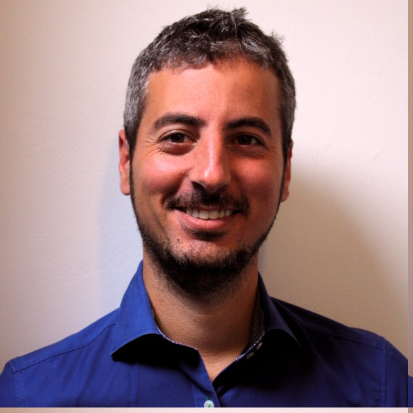

Diego Naranjo
Lawyer, Policy Advocate, Digital Rights Activist

Here is the list of my talks in reverse chronological order:
- 01-06-2017
-
Taller sobre Derechos Digitales
Taller sobre Derechos Digitales, Sevilla (Andalucia)
- 10-05-2017
-
Stop the Censorship Machines! How can we prevent mandatory upload filters in the EU? (VIDEO)
re:publica 2017, Berlin (Germany)
- 27-09-2016
-
Presentation of our copyfails campaign at CopyCamp2016
Copycamp 2016, Warsaw (Poland)
- 21-09-2016
-
Copyright Reform Unlocking copyright for users HD
Round table at the European Parliament, Brussels (Belgium)
- 20-09-2016
-
EU’s copyright overhaul, interview with Diego Naranjo
TRT World interview (video), Live interview from Brussels
- 02-09-2016
-
Panel Discussion on Policy Making for personal data
MyData 2017, Helsinki (Finland)
If you have any queries, feel free to contact me either by sending a mail (diego dot naranjo @ edri dot org) or via Twitter (dnbsevilla).